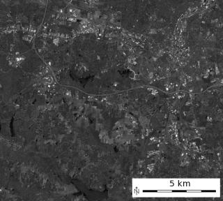
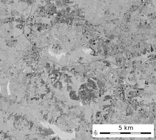
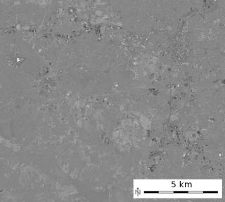

DESCRIPTION
i.tasscap calculates Tasseled Cap (Kauth Thomas, TC) transformation
for Landsat TM data (TM4, TM5, ETM7), MODIS and Sentinel-2 data.
The tasseled cap transformation is effectively a compression method to
reduce multiple spectral data into a few bands. The method was originally
developed for understanding important phenomena of crop development in
spectral space (Kauth and Thomas, 1976).
Tasseled cap coefficients for Landsat 7 ETM+ are at-satellite reflectance
values (C. Huang et al., 2001), the conversion can be achieved with
i.landsat.toar.
The following tasseled cap components are generated:
- tasscap.1: corresponds to brightness,
- tasscap.2: corresponds to greenness,
- tasscap.3: corresponds to wetness,
- tasscap.4: corresponds to atmospheric haze (only selected sensors: Landsat 5,7,8).
EXAMPLE
Calculation of TC maps from North Carolina Landsat 7 ETM scene:
# See manual page of i.landsat.toar for pre-processing
g.region raster=lsat7_2002_toar.1 -p
i.tasscap sensor=landsat7_etm \
input=lsat7_2002_toar.1,lsat7_2002_toar.2,lsat7_2002_toar.3,lsat7_2002_toar.4,lsat7_2002_toar.5,lsat7_2002_toar.7 \
output=lsat7_2002_tasscap

'Brightness' Tasseled Cap component 1
|

'Greenness' Tasseled Cap component 2
|

'Wetness' Tasseled Cap component 3
|

'Atmospheric haze' Tasseled Cap component 4
|
REFERENCES
- LANDSAT-4/LANDSAT-5: TC-factor changed to CRIST et al. 1986,
Proc. IGARSS 1986, p.1467
- Crist, E. P., 1985, A TM tasseled cap equivalent transformation for reflectance
factor data, Remote Sensing of Environment, 17: 301-306.
- LANDSAT-7: TASSCAP factors cited from:
DERIVATION OF A TASSELED CAP TRANSFORMATION BASED ON LANDSAT 7 AT-SATELLITE REFLECTANCE.
Chengquan Huang, Bruce Wylie, Limin Yang, Collin Homer and Gregory Zylstra Raytheon ITSS,
USGS EROS Data Center Sioux Falls, SD 57198, USA (http://landcover.usgs.gov/pdf/tasseled.pdf).
This is published as well in INT. J. OF RS, 2002, VOL 23, NO. 8, 1741-1748.
- MODIS Tasseled Cap coefficients - Ref: Lobser & Cohen (2007). MODIS tasseled cap:
land cover characteristics expressed through transformed MODIS data.
International Journal of Remote Sensing, Volume 28(22), Table 3
- Sentinel-2 Tasseled Cap coefficients - Ref: Nedkov, R. (2017). Orthogonal transformation
of segmented images from the satellite Sentinel-2.
Comptes rendus de l'Académie bulgare des sciences, 70:687-692.
- Yarbrough, L., Navulur, R., 2014, Presentation of the Kauth-Thomas transform
for WorldView-2 reflectance data. Remote Sensing Letters. 5. DOI: 10.1080/2150704X.2014.885148.
SEE ALSO
i.albedo,
i.atcorr,
i.landsat.toar,
i.vi
AUTHORS
Dr. Agustin Lobo, original script, 1997
Markus Neteler, ITC-irst, 2001
Converted to Python by Glynn Clements
Code improvements by Leonardo Perathoner
Sentinel-2 support by Veronica Andreo
Worldview-2 support by Markus Neteler